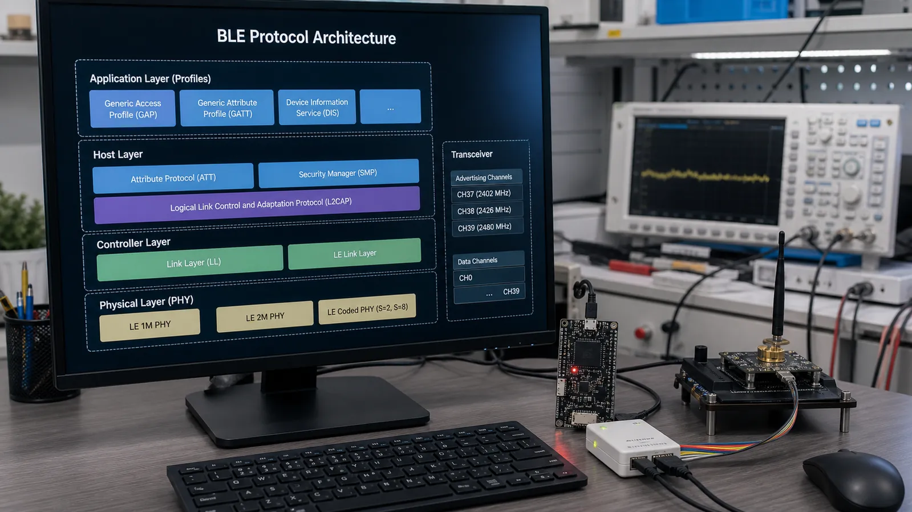

پشته BLE را میتوان مانند یک اداره چندطبقه دید: هر طبقه مسئله مشخصی را حل میکند و داده را با قرارداد روشن به طبقه پایینتر میدهد. این مدل هنگام خطایابی مشخص میکند باید سراغ رادیو، اتصال، Attribute یا منطق برنامه بروید.
PHY بیت را به موج و موج را به بیت تبدیل میکند. Link Layer کانال، زمانبندی، Advertising، اتصال، شماره توالی، کنترل خطا و رمزنگاری سطح لینک را مدیریت میکند. این بخش معمولاً داخل کنترلر رادیویی و Firmware سازنده اجرا میشود.
در بعضی تراشهها Host و Controller روی یک چیپاند و در برخی محصولات جدا هستند. HCI فرمانها، رخدادها و داده را بین این دو جابهجا میکند. مشاهده خطای HCI معمولاً یعنی درخواست Host توسط Controller رد شده یا رخدادی درباره وضعیت رادیو رسیده است.
L2CAP داده پروتکلهای بالاتر را روی لینک منطقی حمل و در صورت نیاز قطعهقطعه و دوباره جمع میکند. ATT جدول Attribute و عملیات Read و Write را تعریف میکند. SMP مسئول Pairing، تولید کلید و بخشی از فرایند امنیت است.
GATT روی ATT مدل Service، Characteristic و Descriptor و روش استفاده از آنها را تعریف میکند. GAP کشف دستگاه، Advertising، نقشها، حالت اتصال و سطحهای امنیتی را سامان میدهد. اپلیکیشن معمولاً با APIهای GAP و GATT کار میکند، اما رفتار واقعی به همه لایهها وابسته است.
برنامه مقدار دما را در Characteristic میگذارد. GATT عملیات Notify را انتخاب میکند، ATT یک Handle Value Notification میسازد، L2CAP آن را حمل میکند، Link Layer بسته و زمان ارسال را تعیین میکند و PHY بیتها را روی 2.4 گیگاهرتز میفرستد. در گیرنده همین مسیر برعکس طی میشود.